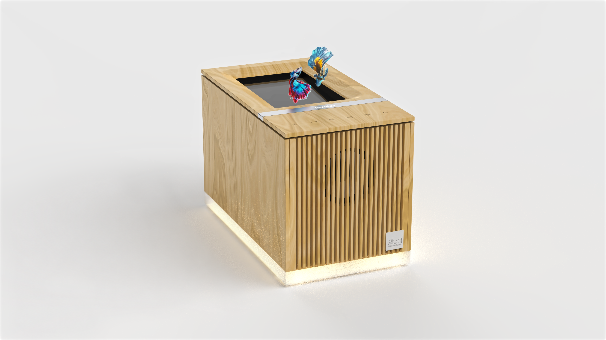
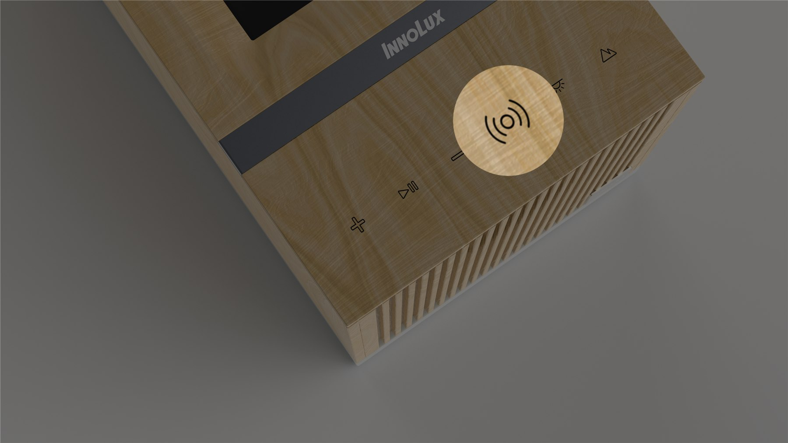
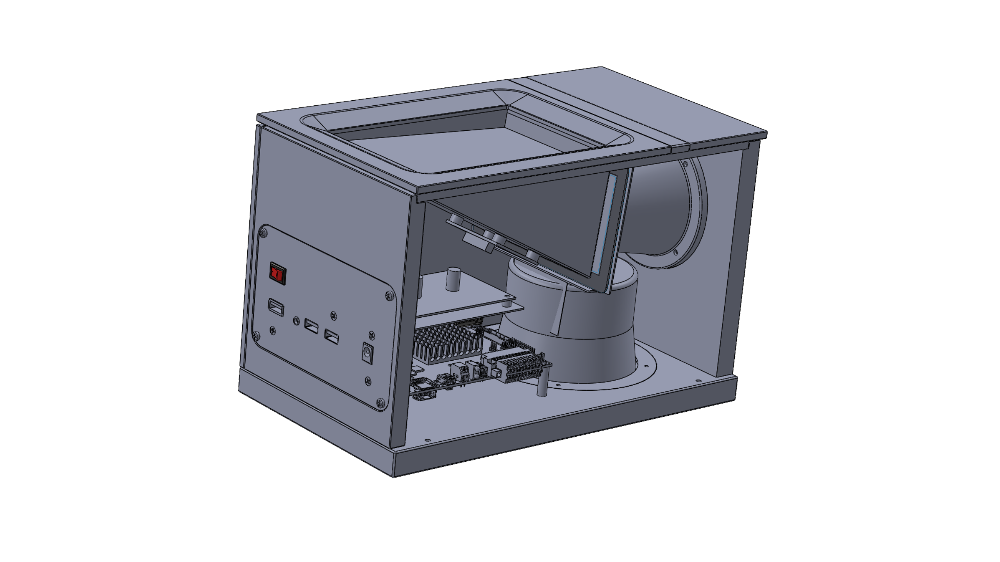

PROJECT 01消費性浮空投影音樂盒
PROJECT 01 / CONSUMER SMART DISPLAY
浮光樂影
浮空投影音樂盒
消費產品設計與跨端系統整合
- 3 端
- 投影端・Android・iOS
- BLE
- 控制、同步與圖片傳輸
- 6+ 情境
- 音樂・月相・自然・相簿
DEVELOPMENT SCOPE
主導產品外觀與機構規劃、浮空投影體驗設計，並親自實作 Android Player、手機端（Android/iOS）BLE 控制協定與跨模組系統整合。
讓浮空投影不只呈現資訊，而是會回應音樂與生活情境的居家物件。
以木質箱體整合浮空投影模組、喇叭、觸控介面、主板與底部光帶，主導從觀看視角、聲學開孔、I/O 配置到材料加工的端到端硬體規劃。
獨立開發播放端 6 大顯示情境，並設計手機端 BLE 通訊協定，實現低延遲的音樂同步與圖片上傳體驗。

將投影畫面與觸控按鍵整合在同一個頂部介面。

整合喇叭、主板、電源、散熱與I/O配置。
月相・專輯・自然情境・EQ・節奏角色・自訂相簿
交付成果完成消費性浮空投影音樂盒之外觀、機構、播放端與跨平台手機控制系統整合。